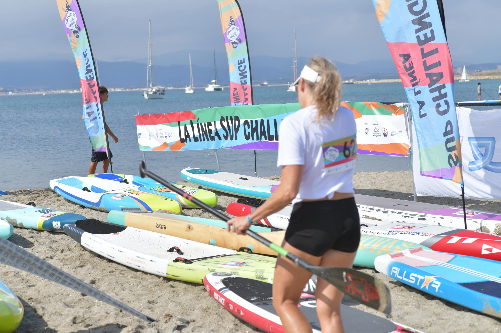
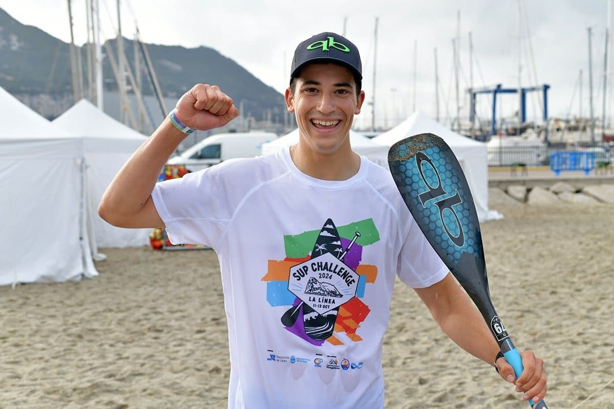
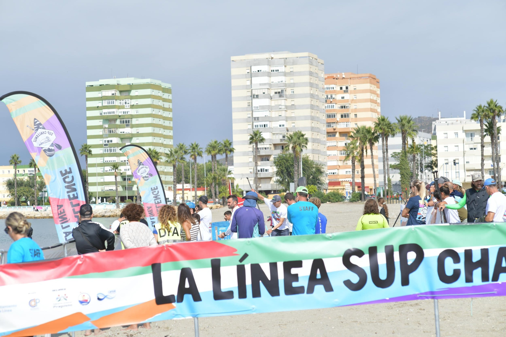
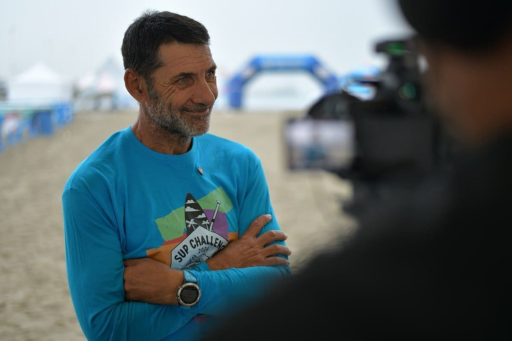

La Nueva Línea
La Nueva Línea es la gran apuesta de La Línea de la Concepción por una nueva forma de vivir la ciudad. Una marca que reúne lo mejor de su oferta cultural, natural y de ocio: conciertos, festivales, rutas al aire libre y planes en familia para disfrutar del municipio todo el año.
El proyecto
La Nueva Línea nace como marca propia dentro del Ayuntamiento de La Línea de la Concepción: no sustituye a la identidad institucional, sino que la complementa como paraguas de todo el ocio del municipio. El objetivo era crear una identidad capaz de conectar con vecinas, vecinos y visitantes, y al mismo tiempo funcionar como sello reconocible en cualquier tipo de actividad.
A partir de este encargo desarrollé la identidad visual completa de La Nueva Línea: logotipo, sistema de color y aplicaciones gráficas. El primer gran escenario para ponerla en marcha fue un evento de SUP, donde trabajé una batería amplia de soportes y merchandising: cartelería, piezas promocionales, materiales para redes y aplicaciones específicas para el evento.
EVENTO SUP
Nuestro último proyecto ha sido SUP Challenge: un evento deportivo para dar visibilidad al paddle surf, combinando competición, naturaleza y comunidad.



